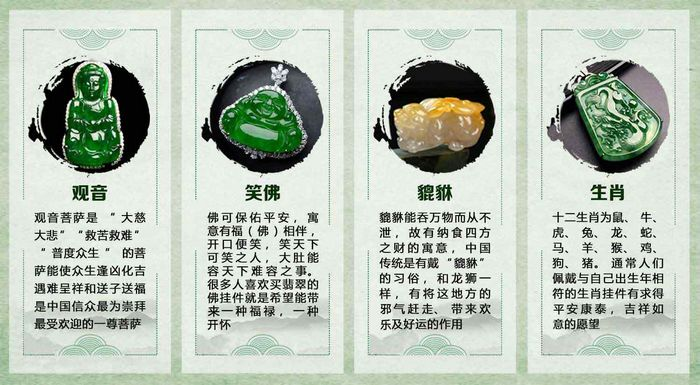

玩翡翠，捂紧钱包，先听听来自悦翠坊创始人的心里话
大家好，我是小悦，在四会经营一家翡翠加工厂（四会是“中国玉器之乡”和“中华翡翠加工基地”，缅甸翡翠原料在四会经过精心的雕刻加工，然后卖往全国各地）。您能看到这篇文章，证明您也是位喜爱翡翠的朋友，与我们相遇便是缘分。我们的家族做翡翠生意已有20年，至今，销售商共100多家，遍布全国，并且与数十位省级玉雕师交情颇深。从小受家庭生意的耳濡目染，我非常明白您挑选翡翠的困惑，其实要买到货真价实、高性价比的翡翠一点都不难，只要您接着往下看！
关于我们
我们从事翡翠行业二十年，随着客户圈子的不断扩大，成立了自己的电商品牌――悦翠坊，注册资金1000万，专营翡翠。作为互联网+买手模式开拓者，我们将“三成价格，十倍品质”作为悦翠坊的核心价值，并与设计师和翡翠艺术家合作，秉承匠人精神为您呈现悦品翡翠。
我们将每天在微信朋友圈中分享悦翠坊最新设计的翡翠，同时分享我们独家原创的翡翠知识，您只需添加我们微信即可！
悦翠坊微信号：(长按复制)

悦翠坊翡翠的优势：
一、源头采购，让利顾客：
在翡翠源头缅甸、揭阳，我们有自己的采购团队，以及高级玉雕师团队，我们的销售价格经常是其他商家的进货价格。
二、保真，件件悦品：
每件作品都会标明材料的来源，国家机构出具鉴定证书，绝不弄虚作假。悦翠坊出品每一件翡翠均提供国家机关鉴定证书一份，由国家检验中心认可，真品无惧检验！
三、价格便宜
悦翠坊集自采原料、设计雕刻、电商销售于一体，因此每件翡翠均为一手货源，绝无中间商赚差价！公司只赚设计加工费，把更大的利润空间留给代理，最大的翡翠价值留给顾客！
四、分享翡翠知识干货
朋友圈会发一些文玩鉴别知识、设计图、加工图、私人订制的成功案例等，让朋友们与翡翠近距离接触，也会揭穿一些无良商贩的翡翠造假、售假手段以及伎俩，看后可避免上当！
五、优惠活动：
我们会不定时推出超级福利活动，用一块翡翠的价格买到十块翡翠的价值，每逢节假日更有买、减、赠活动，超级福利，关注微信随时掌握！
悦翠坊微信号：(长按复制)
一、为何缅甸翡翠是最好的？怎么挑选超值翡翠？
缅甸玉又称翡翠玉。由于缅甸翡翠玉硬度高，光洁明亮。且好的翡翠颜色既鲜亮又平和，有很高的保值和收藏价值，故而称为“玉中之王”。被很多爱玉、佩玉的人所喜爱。由于翡翠玉产在紧邻中国的缅甸，且大部分成品在中国加工的特殊地缘关系，加之中国人对翡翠玉的特别偏爱，因此缅甸翡翠在中国享有“国玉”的地位。悦翠坊手中的翡翠均产自缅甸，若您对缅甸翡翠感兴趣，可添加微信，可与我交流，相遇便是缘分。
经常有人表示，自己很喜欢翡翠，但没有专业知识，对翡翠不够了解，心里没底。翡翠种类如此之多，看的眼花缭乱，都不知道如何选择适合自己的。这个问题，我想也是大部分初入门翠友的心声，翡翠讲究眼缘，外行看色，内行看种，我们就归纳了几点挑选翡翠的要点大家在选购的时候可以进行考虑。
选择一款心仪的翡翠并不容易，翡翠讲究“眼缘”，看对了，其它也变得不重要了，喜欢便是一切。如果在选购方面还有不懂，不了解的可以加我的微信 我来详细为你介绍怎么挑选翡翠的要点！
二、翡翠寓意
中国的吉祥寓意图太多了，每种图案的意义不同，适合的人群也不同。送礼之前要好好研究一番，才会四两拨千斤，送得人心花怒放。

三、翡翠种地
俗话说，外行看色，内行看种，翡翠的种，也就是它质地本身的美丽程度，好的翡翠应该是质地细腻无暇透明度高，甚至起胶，起荧，刚性足的，翡翠底子好，就犹如美人的好皮肤，不需要上妆，无论怎么看，都是美的。
四、翡翠工艺
翡翠从粗糙的原石到水润喜人的饰品，这都少不了雕工匠师的存在。经过雕刻的翡翠，造型新颖多变，玉能陶冶人，也能装点您的魅力，只有好的雕工才对得起自然的精品，才能配得上您的气质！
五、完美度
“无纹不成玉”。“玉无纹，天无云，玉有纹，身有银”，正如天上有云一样，玉必然也有纹。不同的人对于瑕疵的理解不同，有人认为裂纹才算瑕疵，有人认为石花杂色也算瑕疵，也有人认为翠性（沙星）都算瑕疵。翡翠行业内基本认同裂纹、裂绺才算瑕疵。比较中肯的观点是：裂纹、裂绺一定算瑕疵；翠性（沙星）一定不算瑕疵；杂筋、石纹、石花、杂色、脏点等如果程度较深足以影响原件的美观就算瑕疵，如果程度较浅对原件的美观没有明显的影响就不算瑕疵。
如何鉴定翡翠
如果您有这方面问题想详细了解，不妨添加我的微信，就当交个朋友，我们随时交流。
悦翠坊微信号：(长按复制)
翡翠造假的手段技术层出不穷，严重扰乱市场秩序，但总体而言，鉴别翡翠还是集中于一下几点：
1. 听声音： 轻轻敲打天然翡翠，发出的是一种清脆悦耳之声，如果是人工处理品则发出低沉闷哑的声音
2. 看颜色： 天然翡翠颜色自然，分布不均，绿色走向延长，一般无荧光,翡翠颜色繁多，初分有红、黄、紫、墨等，如其中一色“绿”细分又有帝王绿、阳绿、菠菜绿、苹果绿等，颜色是决定翡翠价格的重要因素之一，极品翡翠，颜色略略差别一点，就可以价格相差几十倍，用一双锐利的眼睛去分辨颜色，是每位翠友都要学习的。3. 看抛光面： 天然翡翠的抛光面细腻、光滑，呈带油脂的强玻璃光泽，如果在抛光面上仔细观察，通常可见到花斑一样的变斑晶交织结构；同时可见微透明至不透明的白色纤维状晶体，俗称“石花” 4. 看内部结构： 翡翠经强酸碱浸泡处理后，在透射光照射下，可见内部纵横交织的裂隙。 这些方法可以帮助各位翠友在选购时做一些初步判断，如果要深入了解，学习更多翡翠知识，可以联系我们，让我成为您身边的翡翠顾问。
翡翠价格
翡翠是玉石之冠，高档翡翠在各拍卖会上不断创造令人惊叹的天价，但仿冒天然翡翠的B、C货及其他仿冒品业层出不穷。所以弄清楚翡翠价格是至关重要，翡翠的价格参考依据根据其翡翠的种、水、色、工、大小、瑕疵等 因素综合决定的。不是所有的翡翠价格都贵，只有那些产量稀少，品相极佳，雕工出色的翡翠价值才高，之所以高主要是极佳的翡翠产量极为稀少而市场又认可追捧。翡翠的价值是多个因素综合定价的，但种水色工四个最重要的指标，是衡量一件翡翠是否有收藏价格的基础！
悦翠坊微信号：(长按复制)
加【悦翠坊】微信号，你可以看到我们朋友圈中的翡翠，每天都有大量的新品上新，多看看你就会更了解和掌握翡翠的价格！
真乃居先，诚为业本！翡翠一手货源，超值优选，每日上新，物美价廉。
鉴定证书就跟我们每一个人有一个唯一的身份证一样，对于入行不久的朋友，通过鉴定证书就能直接的判断所买翡翠的真假。
悦翠坊出售的所有翡翠，都是正规权威国检证书，认证机构给当前的翡翠成品进行严苛鉴定，保证绝无任何虚假。并且悦翠坊支持终身复检。
让你放心购，大胆购！我承诺给你提供以下保障：
悦翠坊以顾客为先，您收到货后有任何问题，请及时联系我们，我们服务到您满意为止！
1. 零风险保障：所有货品保证无条件退货（签收起，如不满意，24小时内退换并寄出）。
2. 一手货源：工厂直接发货，省去中间环节加价，至少省去70%加价。
3. 假一罚十：保证天然翡翠A货，国家权威证书保证，支持任何专业机构检验。
但是如果你盲目购买翡翠，买到假货的风险将一直存在！
除了好坏辨别之外，如果……
你想了解更多翡翠知识；
翡翠A货 B货 C货如何区别；
你想在购买前咨询一下行家的建议；
或者你已经购买了翡翠，又不确定真假；
(打开微信+加我为好友)
悦翠坊微信号：(长按复制)
假货不得人心，说真话，卖真货，标实价，悦翠坊让你买翡翠不吃药。
- 悦翠坊微信号：(长按复制)
一手货源，假一赔十